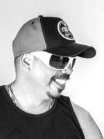

Informações sobre a banda:
Dazaranha (também conhecida somente por Daza) é uma banda brasileira de reggae rock—nativa de Florianópolis, Santa Catarina. É formada por seis músicos que produzem letras as quais remetem à cultura popular florianopolitana e que se utilizam usualmente do som do violino e da percussão. Sua discografia é composta por seis álbuns de estúdio e um DVD gravado ao vivo, além de participação em uma coletânea. É considerada a banda com maior expressão no cenário musical do estado de Santa Catarina[1] superando a Expresso Rural. O Dazaranha iniciou suas atividades no ano de 1992, por pouco tempo atendendo pelo nome de Almirante Mirinda, atuando em bares e casas noturnas da Grande Florianópolis.[2]
Devido a sempre ótima qualidade de som, a banda Dazaranha começou a ser reconhecida na região, lotando os locais de suas apresentações e cativando muitos fãs. Logo em seguida, dois anos após o início, a banda lança o seu primeiro trabalho fonográfico, com a participação da música Retroprojetor na coletânea Ilha de Todos os Sons lançada em 1994 pela RBS Discos. Dois anos depois vem o lançamento do primeiro álbum Seja Bem Vindo, também pela RBS Discos, que alcança o status de clássico e vira sucesso de vendas. As músicas deste CD, produzido pelo baixista Adauto Charnesky e pelo violinista Fernando Sulzbacher, são lembradas até hoje pelo público nos shows da banda e reproduzidas em palco. Logo após o percussionista Gerry deixa a banda, que segue como sexteto. Em 2001 o álbum é relançado com cinco faixas bônus, entre elas, O Cubo, Mario Cesar e uma nova roupagem para Galheta e Novos Ditados.[3]
Em 1998 chega a consagração do trabalho do Dazaranha. A banda lança o disco Tribo da Lua que contém, entre outros clássicos, o grande hit Vagabundo Confesso além da grande participação especial de Jorge Ben Jor na faixa Te Liga e da produção de Luiz Carlini. Com este trabalho, várias portas se abrem para a banda e os leva a ganhar um prêmio de disco de ouro, o primeiro da história de uma banda catarinense, após uma vendagem superior a 50 mil cópias. No ano seguinte, a segunda baixa. O então baterista Zé Caetano deixa a banda e da lugar ao novo integrante Adriano Barvik, que segue os trabalhos junto ao grupo.[3]
Com tamanho reconhecimento no seu trabalho, a banda resolve construir o seu próprio estúdio chamado Caixa d’Água, aonde seria gravado no ano de 2004 o CD Nossa Barulheira produzido pelo violinista Fernando Sulzbacher e pela banda. O CD teve como single a música Salão de Festa a Vapor, mantendo o mesmo nível nas composições mas com guitarras mais marcantes e pesadas nas músicas, o qual levaria o Dazaranha a mais um feito inédito, vencer o Prêmio Claro de Música Independente em 2006 como melhor álbum pop . Com toda a bagagem e conhecimento musical alcançados ao longo de 15 anos de carreira mais o retorno do percussionista Gerry, em 2007 o Dazaranha alça voos mais altos na produção da sua mais nova obra, o disco Paralisa produzido por Ricardo Vidal (O Rappa) e que conta com uma modernização no já consagrado estilo da banda, maior sofisticação e a maciça participação do Trio Santo Amaro nos metais que a partir daí começou a acompanhar a banda nos shows por alguns anos. Destaque para as faixas Carolina, Durma Bem e Ô Mané (com participação especial de vários nomes da música local).
No ano de 2008, mais uma mudança de integrantes. O baterista Adriano larga as baquetas e dá lugar a João Basañez, ex-integrante da banda catarinense Mary Black. Após muita espera, um antigo sonho dos fãs do Dazaranha é enfim realizado. Em um memorável show realizado em dezembro de 2008 no Teatro Ademir Rosa (CIC), nasce o primeiro DVD lançado em 2010 pela Universal Music com os maiores sucessos da história do Daza (como a banda é carinhosamente conhecida pelos fãs). Destaque para a participação especial do cantor Armandinho na faixa Salão de Festa a Vapor e faixas inéditas como Dia Lindo, Pra Ficar e Motoboy, além do making-of e um documentário gravado no estúdio Caixa d'Água onde os integrantes contam um pouco da história da banda. Uma grande equipe de profissionais unida para realizar o DVD: realização e produção de Dazaranha e Orth Produções, Vídeo de Heron Domingues (HD), áudio de Ricardo Vidal (Studio55) e mais o documentário assinado por Mártin Carvalho (Cristal Broadcast).
O ano de 2012 marcou a comemoração de 20 anos de história do Daza. A banda que iniciou sua carreira no ano de 1992, comemorou seus aniversário com o lançamento de um box contendo toda a discografia da banda, inclusive o DVD ao vivo gravado em 2008[4] e um show comemorativo no CIC com a participação especial de músicos convidados como Daniel Lucena e os ex-integrantes Zé Caetano e Adriano Barvik. O show foi transmitido ao vivo pela TVCOM.[5][6] No ano de 2014, após quatro anos sem lançar uma nova obra, o Dazaranha lança "Daza", o seu sexto álbum (o quinto gravado em estúdio). Produzido por Carlos Trilha, este disco marcou uma mudança em relação aos outros pois deixou um pouco de lado o sotaque mané marcante dos vocais, além de contar com músicas mais sentimentais, com o clima marcante do "amor e esperança".
No dia 10 de fevereiro de 2016 a banda Dazaranha anunciou a saída de Gazu, frontman do grupo desde sua fundação. Foram 23 anos a frente dos vocais e de contribuições com algumas composições de muito sucesso ao longo do tempo. Nem a banda nem Gazu divulgaram o motivo da saída do vocalista, mas já eram conhecidos a bastante tempo os trabalhos solos de Sandro Costa em paralelo com o Dazaranha. Após a saída, Chico e Moriel assumiram os vocais, e a banda passou a ter cinco integrantes em seu quadro principal.[8][9][10] Após a saída do Gazu,lança o sétimo álbum chamado Afinar as Rezas que foi produzido por Carlos Trilha no Rio de Janeiro. O álbum é um sucesso no Spotify tendo obtido mais de 4 milhões de plays. Segundo o vocalista Chico Martins, o projeto representa a nova fase da banda, sendo um álbum moderno, mas que ao mesmo tempo traz um mergulho nas origens do Dazaranha, com mistura de guitarra e violino. Destaque para as faixas Afinar as Rezas e Deixa a Tartaruga Nadar. Professores de Florianópolis utilizam a canção Afinar as Rezas para ensinar geografia e história local.
Logo após a sequência da banda com a nova formação de vocalistas, ainda no início de 2017, Moriel e Chico sentiram a necessidade de poderem se soltar mais enquanto estavam cantando. Foi aí que assume a terceira guitarra o músico contratado Eduardo Stormowski, mais conhecido como Dinho.[12] Ele passou a integrar o Dazaranha e teve sua primeira participação em uma gravação oficial de um novo single Se tu diz, lançado em março de 2018, que foi uma parceria com o amigo da banda Lenine.[13] A música contou com um clip gravado em Florianópolis e é mais um trabalho desta parceria que começou anteriormente por intermédio de composições interpretadas por Lenine e Chico Martins no CD gravado para o Projeto Tamar. Lenine é embaixador deste projeto no Recife e o Dazaranha representa Floripa.[14] No ano de 2017 o Dazaranha completaria seus 25 anos de carreira e foi quando idealizou e executou o projeto Daza 25 Anos. A banda montou um show acústico com a participação da Camerata Florianópolis, aonde foi gravado e trabalhado a produção de um novo DVD. Assim como no DVD anterior, este também foi gravado no Teatro Ademir Rosa (CIC) e contou inicialmente com duas apresentações, mas como a procura dos fãs pelo evento foi tão grande, a organização acabou abrindo novas datas para a realização do show. O show ficou marcado como um marco na história da música catarinense.[15] Em 2018, a banda lança o álbum ao vivo Dazaranha 25 Anos (Ao Vivo) feat. Camerata Florianópolis em todos os aplicativos de música tendo alcançado mais de 2.5 milhões de plays até o momento. Atualmente, a banda está finalizando o nono álbum da banda que trará novamente assinatura do produtor musical Carlos Trilha. O álbum, gravado no estúdio Órbita durante uma temporada da banda na cidade do Rio de Janeiro, encontra-se em fase de masterização.
Voltar ao topo
| # | Disco | Ano |
|---|---|---|
| 1 | Seja Bem Vindo | 1996 |
| 2 | Tribo da Lua | 1998 |
| 3 | Nossa Barulheira | 2004 |
| 4 | Paralisa | 2007 |
| 5 | Ao vivo | 2010 |